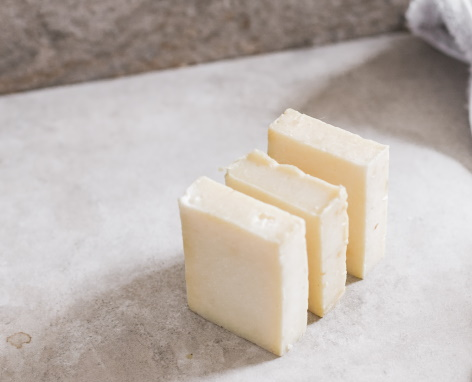

Overview
Purpose
The key to good cooking is butter. The key to amazing cooking is amazing butter. It can be hard to find this amazing butter, but with a simple website it can become easy. I can make a website that with a few clicks can help someone find the best butters available near them. It won’t only be a tool for finding butter though. I’m imagining a library of all butter related knowledge. Things like ways to make butter or the best methods for storing it.
Audience
The audience for this site will be anyone who's serious about their cooking or baking. This will be people from the ages of 13 to 60 and will already know their way around the kitchen.
Branding
Website Logo

Style Guide
Color Palette
Palette URL: https://coolors.co/52b788-362417-92817a-ffc857-fffbff| Primary | Secondary | Accent 1 | Accent 2 |
|---|---|---|---|
| #92817A | #FFC857 | #362417 | #52B788 |
Typography
Heading Font: Literata
This font is easy to read and clearly stands out as the heading.
Paragraph Font: Open Sans
Open Sans is pretty easy to read with minimal decorations and as a sans serif font it works nicely with the heading.
Normal paragraph example
The best Whitewater Rafting in Colorado, White Water Rafting Company offers rafting on the Colorado and Roaring Fork Rivers in Glenwood Springs. Since 1974, we have been family owned and operated, rafting the Shoshone section of Glenwood Canyon and beyond.
Colored paragraph example
Trips vary from mild and great for families, to trips exclusively for physically fit and experienced rafters. No matter what type of river adventures you are seeking, White Water Rafting Company can make it happen for you.
Navigation
Site Map
Content
Home page
Butter is the staple of all good food. Whether you're baking a cheesecake or frying up an egg, your butter will either make or break the meal. We recommend you never run that risk again. We've put together an arsenal of tools to guarantee success in all butter related activities.
Got butter? Seriously though, running out of butter never happens at a convenient time. Whether you're making toast or trying to whip up some tasty treats, its sure to ruin your day. If we could promise you'd never run out of butter again, we would. Instead, we can promise to help you find the closest source of fine butter near you. Try out our Butter Finder today!
Have questions about what butter can do for you? Unsure why this website exists? Visit our FAQ to find the answers to the questions you never asked!
Nothing beats the taste of cookies fresh out of the oven, but we bet we can make them better. Fresh, home-made butter could be exactly what you need to take your baking to the next level. Learn how to make butter today!
Images for the Home page


Butter Near Me
A wise man once said, “butter taste good.” We don’t know who it was, but they were right. Help us help you find the best butter near you. Use the tool below to find the closest source of butter near you.
Images for the Page 2


FAQ
Why was this website made?
- We believe that butter should be enjoyed by everyone and vow to make sure you never use fake “butter” in your baking ever again.
Fake butter?
- You know, all those things that say to taste exactly like butter. Not to name names, but normally they claim to be so close in taste you won’t believe it’s not butter.
Where do you sell the butter?
- We don't actually sell butter, nor do we recommend buying butter online. You’ll find the freshest butter in stores near you. Even better, learn to make your own once we launch our tutorials.
When will the butter making tutorials be available?
- We don’t have a definite timeline, but we expect to have them available by Q3 2022.
Isn’t butter bad for me?
- Yes, but consumed in moderation we feel the joy it adds to your life is enough to offset any negative effects.
Images for the Page 3

Wireframes
Create three wireframes for your site. One for each page and list them here
Home
[Any additional details about home that the wireframe does not make clear]

[Page 2]
[Any additional details about page 2 that the wireframe does not make clear]
[Page 3]
[Any additional details about page 3 that the wireframe does not make clear]